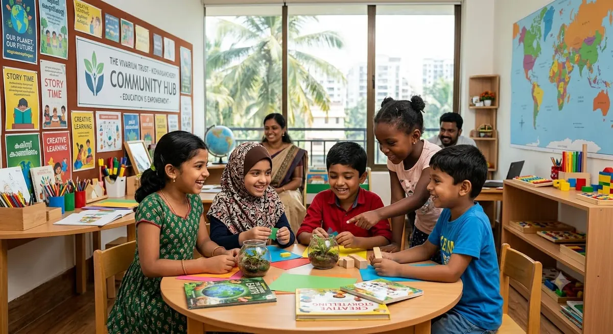
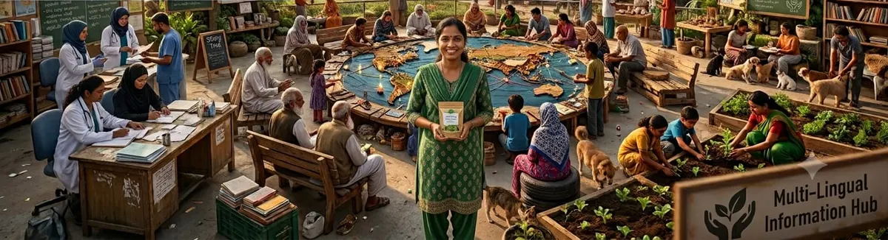

A place to arrive, and a place to start from.
Our name starts from kin, the people we belong to. In Kerala homes the verandah is where neighbours stop, talk and are made welcome, and we take that as our model.

Origin and purpose
Kinora is concept content created for a design project, so it has no real history. The idea is simple: build open, welcoming places where learning, skills and community meet.
Mission: connect people, skills and resources so everyone can build a better future. Vision: a neighbourhood where nobody has to ask permission to learn.
Values
Dignity
People are the experts on their own lives.
Inclusion
Every language, faith, ability and age is welcome.
Responsibility
Voluntary giving, honest reporting, safe participation.
How initiatives are designed and evaluated
We start with residents' priorities, pilot for three months, then review outputs and outcomes with participants before scaling. Our hopes for the future: more local mentors, a shared learning library and open yearly reports.
